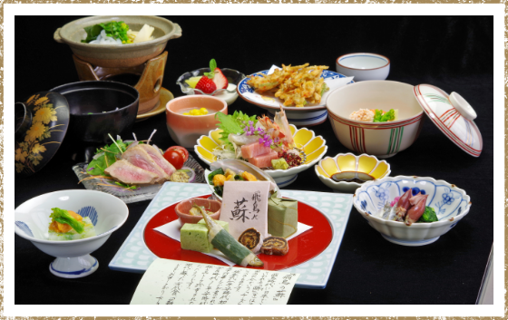

夕食
-

- 心和むふるさと会席
-
大和特産の食材を使った昔懐かしいふるさとの味。
目と舌で趣向を凝らしたお料理をご堪能いただけます。●おしながき例
- 大和食材を使った10品とデザートが付きます。
-
・季節にあった食材を使った一人鍋
・奈良特産の食材をアレンジした料理
・手作りのわらびもち
※季節によってお料理内容は変わります。
※お子様にはお子様用のお料理をご用意致します。
-

- 奈良のうまいもの会席
-
心和むふるさと会席のグレードアップになります。
奈良名物の「柿の葉寿司」や、昔の献上品として珍重された高級食の「蘇」をお召し上がりいただけます。●おしながき例
大和食材を使った10品とデザートが付きます。
※季節によってお料理内容は変わります。
※お子様にはお子様用のお料理をご用意致します。
-
- 味噌仕立ての興福鍋
-
豚肉や白身魚や季節のお野菜を味噌で仕立てあげた栄養たっぷりのお鍋です。
大仏館秘伝の味付けで、お得意様も「寒い季節はこれ！」とご指名。〆のうどんとも相性抜群！
おなかいっぱいでもついつい手が伸びてしまいます。※11月～3月限定
※仕入れによって食材が変わる場合がございます。
-
- ほっこり寄せ鍋
-
豚肉や白身魚や季節のお野菜と醤油ベースで仕立てあげた栄養たっぷりのお鍋です。
大仏館秘伝の味付けで、リピーター様が続出の逸品。締めのおうどんも相性抜群！
おなかいっぱいでもついつい手が伸びてしまいます。※11月～3月限定
※仕入れによって食材が変わる場合がございます。
朝食
-
- 茶粥朝食
-
奈良ならではの茶粥朝食。香ばしいほうじ茶でお米からじっくり土鍋で炊き込んでいます。
さらりとして体に優しくヘルシーな茶粥はとっても美味しく、お子様もペロリと食べてしまうほどです。
食後のデザートには、お腹に優しい「ところ天」が付きます。●お粥の効果ってご存知ですか？
色肌つやをよくする
力体力をつける
寿寿命を延ばす
など、お粥には十種類の利益があると言われています。
-
- 和朝食
-
朝はしっかり食べたい！
そんな方に人気の和定食。
優しい味の中にもボリュームをしっかりプラス。
1日の活力を大仏館の朝食で充電できます。